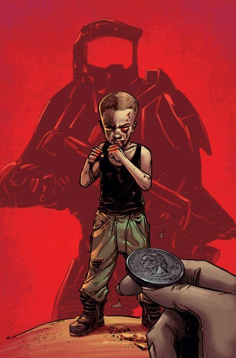

JOHN-117 AS A KID, DURING INTENSE TRAINING
SUMMARY
- Master Chief, whose real name is John-117, was taken from his family at a young age to join the Spartan-II program. This program aimed to create super-soldiers to protect humanity. As a child, John underwent intense physical and mental training, along with genetic enhancements. Despite the harsh conditions, he showed exceptional skill and leadership. This rigorous training transformed him into the legendary warrior known as Master Chief, ready to face any threat to humanity. Trainings included intense physical drills, such as long-distance running with heavy weights, hand-to-hand combat, and obstacle courses that tested agility and endurance. He also faced mental challenges, like strategic war games and problem-solving tasks under extreme pressure. The combination of physical and mental rigor, along with genetic enhancements, forged John into a resilient and highly skilled super-soldier, capable of surviving and excelling in the most demanding situations.